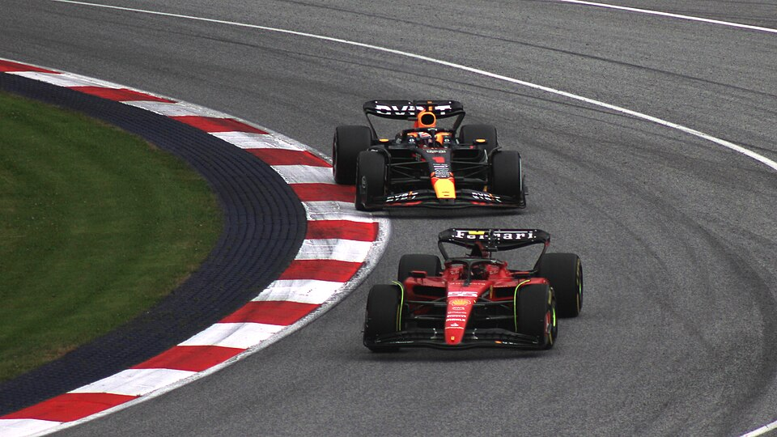
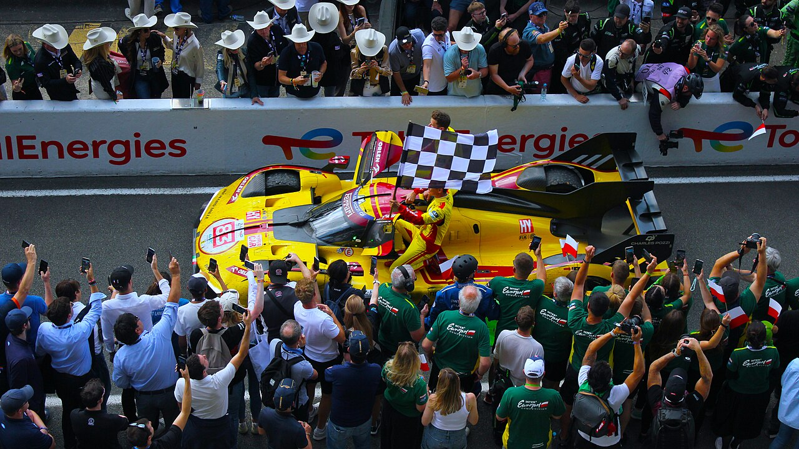

Position and Gap
Watch the time difference between cars. A quickly shrinking gap often means the following car has better pace.
02 / RACING EVENTS
Motorsport becomes easier to understand when you know what to watch: position, time gaps, traffic, strategy and battles between drivers.
The simplest information is position. The timing screen shows who is leading and the gaps between cars.
A shrinking gap often means one driver is catching another. This can develop into a battle even before an overtaking attempt happens.

Watch the time difference between cars. A quickly shrinking gap often means the following car has better pace.
Qualifying usually decides the starting order. A good grid position reduces the amount of traffic a driver must fight through.
A car may temporarily lose positions during a pit stop but gain time later through fresh tyres, fuel or better timing.
In multiclass endurance racing, cars with very different speeds share the circuit. Managing traffic becomes part of the competition.

Green: the track is clear and racing continues.
Yellow: danger is ahead. Drivers must slow down and overtaking is normally prohibited in the affected area.
Red: the session has been stopped.
Blue: commonly warns a driver that faster traffic is approaching.
Racecraft means competing against other drivers rather than only producing a fast lap.
A driver can create an overtaking chance by getting a better corner exit, using a braking zone or pressuring the driver ahead into defending.
A driver may choose a line that makes overtaking more difficult, but should remain predictable and follow the sporting rules.
When cars are beside each other, awareness matters. Contact can ruin both races, so winning one corner is not always worth taking a large risk.
Good overtakes often begin several corners earlier. A strong exit can create the speed needed to attack at the next corner.
This video introduces common overtaking ideas and mistakes when racing another driver.
Video embedded from YouTube.
A useful introduction to qualifying, tyre strategy, pit stops and high-speed single-seater racing.
Long endurance races introduce driver changes, reliability, strategy and several classes sharing the same circuit.
IMSA is another useful example of multiclass sports-car racing, where prototypes and GT cars interact in traffic.
Onboard and sim-racing broadcasts can make racing lines, braking points and driver battles easier to understand.
Racing photographs by Lukas Raich, licensed under CC BY-SA 4.0. Source: Wikimedia Commons.